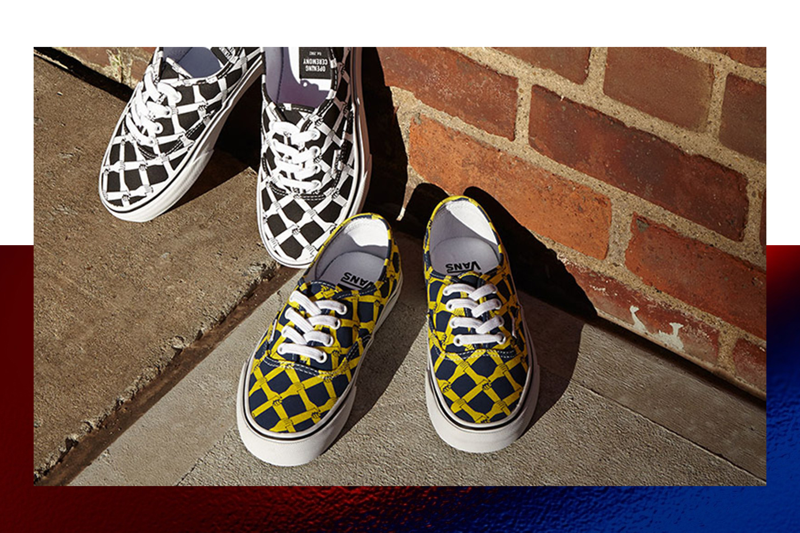
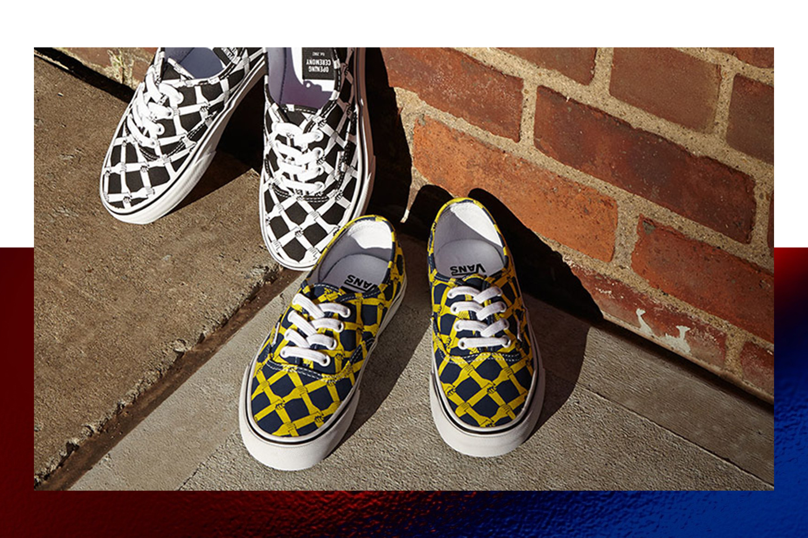
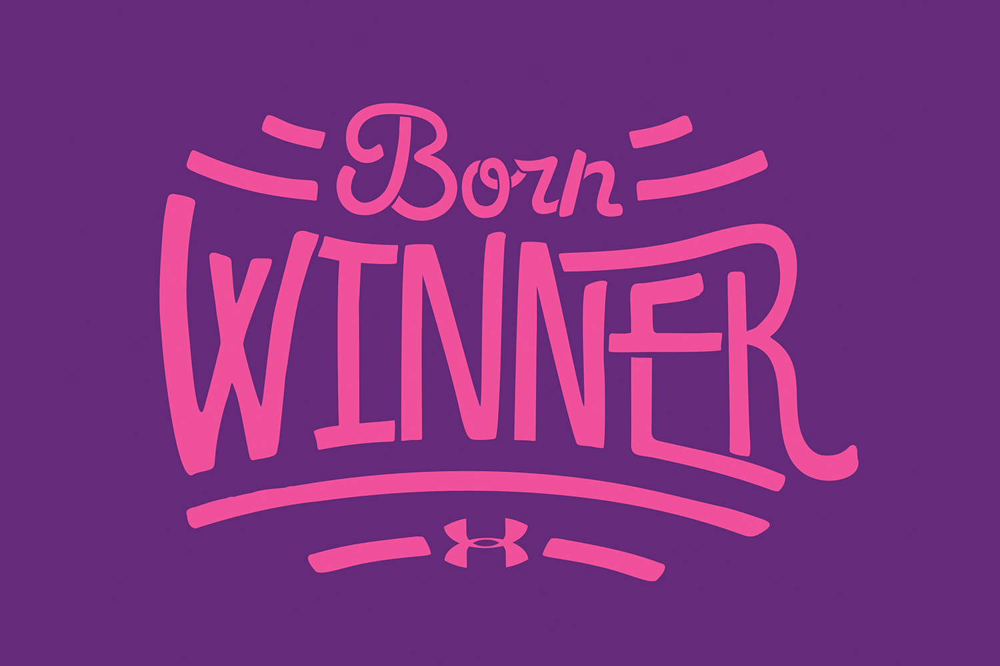
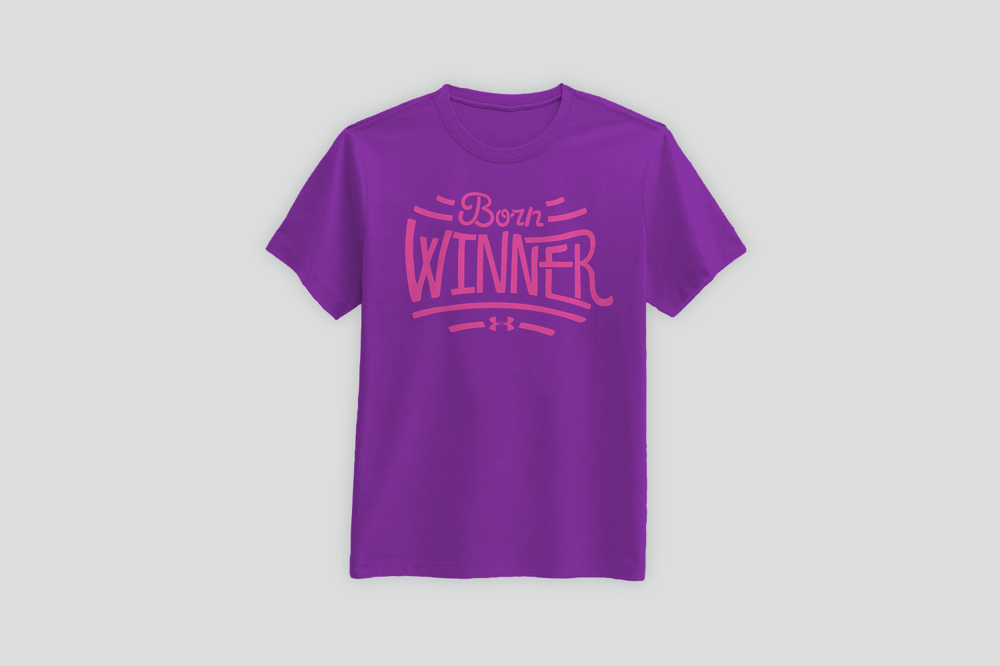
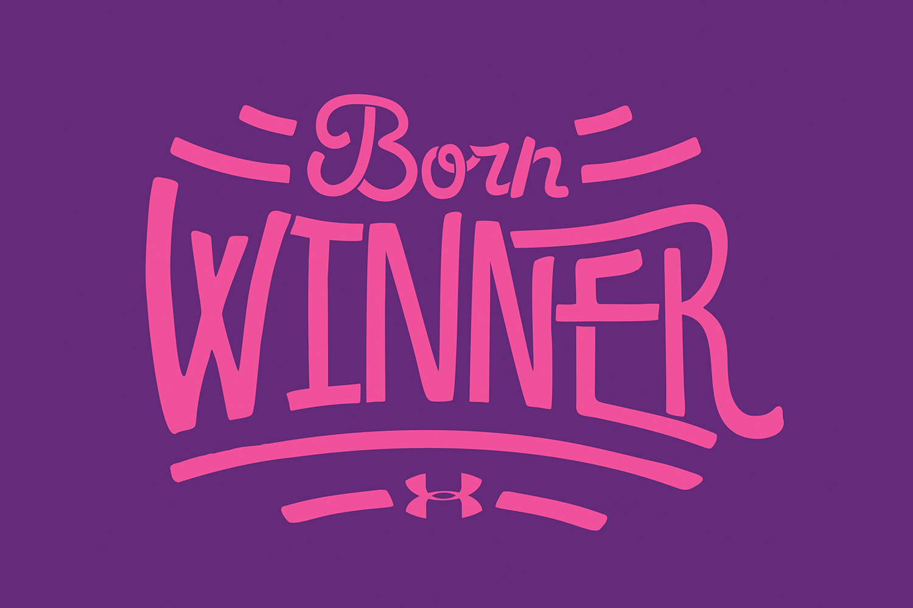
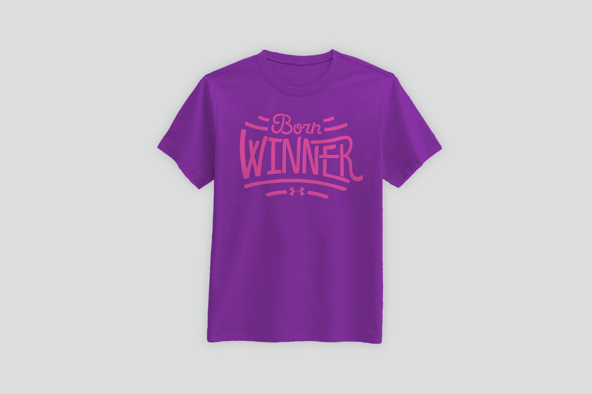

* // Textile Design
Curated by The Doneger Group, Intertextile Shanghai
is one of the largest apparel fabric and accessories trade shows,
exhibiting fabric and manufacturers from around the world.
3.1 Opening Ceremony Prints
 



3.2 Zoo York Graphics
3.3 UnderArmour Graphics

 



© Byron Chow 2018